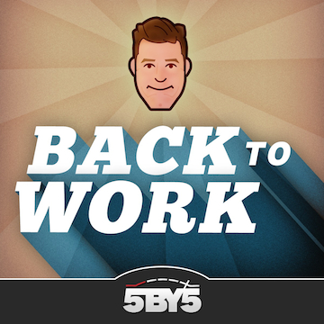

Back to Work #56: One Giant Beholder Dinosaur

Although one of the hosts can be extremely tangential and talk like he's had too much caffeine, he seems very well-read on the topic of productivity, and getting “back to work”. The over-arching theme to this episode is about having "an unhealthy emotional attachment to physical objects that are not making your life better." His main reference point is a book (really, a chapter from it) by Peter Walsh called It's All Too Much: An Easy Plan for Living a Richer Life with Less Stuff. I'm no hoarder, but I'm guilty of keeping things I don't really need. I sense a theme for this year's spring cleaning.Unrelated to the main theme: Merlin Mann throws out a one-liner I liked: "There are a lot of maxims that are impossible, but are a pretty good yard stick for deciding if you're going in the right direction."